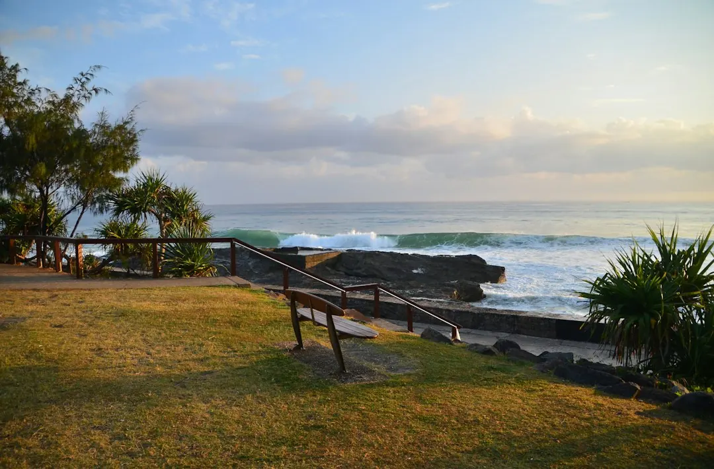

For homeowners comparing concrete sleeper retaining walls gold coast options, the useful decision is how wall height, drainage, access, engineering and the condition of an existing wall affect the job.
Concrete Sleeper Retaining Walls Gold Coast Explained
The published guide from Concrete Sleeper Retaining Walls Gold Coast describes walls for sloping blocks, tired timber walls, garden levels and boundaries. Before seeking a price, record the approximate length and height, what the wall will retain, and whether an old wall must be removed.
Also note whether a driveway, pool, house or fence sits above the wall. These loads can affect the design. Soil, machinery access, excavation and drainage also influence the finished cost, so a wall-face calculation is only a starting point.
A leaning or rotting treated-pine wall needs a different quote from a new garden edge. Removal, spoil handling and restricted access may need to be included from the beginning.
Select the wall system and finish
Precast concrete sleepers slot between hot-dip galvanised steel posts. The published dimensions include sleepers about 200 mm high and at least 75 mm thick, with common lengths of 1.6 m, 2.0 m and 2.4 m. The number of courses and post arrangement depend on height, ground conditions and loads.
Concrete sleepers do not rot, which is why they are identified as an option when treated pine has failed. Available finishes include charcoal, timber-look and sandstone. Plain grey sleepers can be painted with exterior masonry paint.
Boundary work needs a separate discussion about the fence, drainage, boundary line and neighbour. A Colorbond fence may sit above the wall or use sleepers as under-fence plinths. Taller walls and walls carrying additional load may require engineering and approval.
Resolve drainage and approval before construction
The described drainage arrangement uses slotted agricultural pipe at the base, clean gravel, geotextile fabric and a fall to an approved outlet. Ask for each item to appear in the written quote, including where collected water will discharge.
The guide states that retaining walls are regulated building work in Queensland. Work valued over $3,300, including most retaining walls, must be completed by a QBCC-licensed contractor, typically under a structural landscaping or builder licence class.
Where building approval is required, a building certifier issues it before work starts. Required engineering must be done or directly supervised by a Registered Professional Engineer of Queensland. Ask these questions before accepting a price:
- Does the proposed height and position require approval?
- Is engineering included, separate or not required?
- What drainage outlet is proposed?
- Are underground services checked before post holes are dug?
Compare the complete cost, not only the wall face
The 2026 Australian guide range is about $250 to $650 or more per square metre of wall face for a supplied and installed concrete sleeper wall. Gold Coast guides put a 1 metre wall at roughly $295 to $590 per lineal metre installed, with $440 described as typical.
Engineering design and certification, where needed, are guided at roughly $500 to $2,000 per job. Height, access, drainage, footings and soil can move the result away from a simple area calculation.
Compare quotes against the same scope. Check whether they include excavation, old-wall removal, spoil removal, posts, sleepers, concrete, footings, drainage, engineering, certification, fencing and the selected finish. Warranty terms should also be written down rather than assumed.
Who this guide applies to
This information suits Gold Coast homeowners planning a wall for a sloping block, lawn, garden bed, boundary, fence plinth or replacement of a tired timber structure. The same questions apply to commercial work, particularly where access, surcharge loads, drainage and approvals affect the design.
It is not a final design for a taller engineered wall or a site with uncertain underground services. The published process recommends a free Before You Dig Australia enquiry before post holes are installed to check for underground pipes and cables.
For another practical perspective on planning the project, see the related Gold Coast retaining wall planning guide. The named business states that its enquiry has no cost and no obligation to proceed.
- Describe the wall. Provide the suburb, approximate length and height, what the wall retains, and whether an existing timber wall is being removed.
- Check the site. Ask about soil, access, drainage, loads above the wall, underground services and approval requirements.
- Compare the quote. Review excavation, removal, sleepers, posts, drainage, footings, engineering, certification and fencing inclusions.
- Choose the finish. Select charcoal, timber-look, sandstone or painted grey after the structural scope is clear.
| Project measure | Published guide | Main cost variables |
|---|---|---|
| Wall face | About $250 to $650+ per m² | Height, access, drainage, footings and engineering |
| 1 metre wall | About $295 to $590 per lineal metre | Site conditions and inclusions |
| Engineering and certification | About $500 to $2,000 per job | Design requirements and wall complexity |
This guide covers wall choices, drainage, approvals, quote inclusions and indicative Gold Coast pricing.